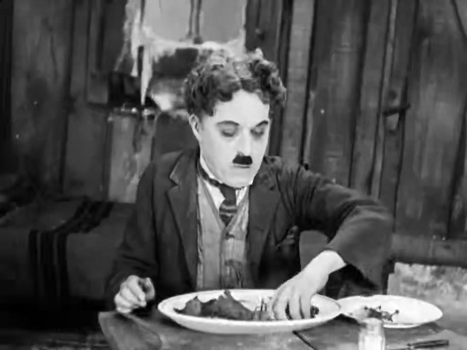

The Gold Rush, frame at 16:45
Charlie Chaplin · 1925 · Silent film, black and white (frame)
Free to use
Chaplin took the idea of eating a shoe from the Donner Party, who were snowbound in the Sierra Nevada and driven to eat the leather of their shoes. He shot on location near Truckee, California, for two weeks in 1924, with six hundred extras climbing a pass dug through the snow, but kept only the opening scene. Everything else was shot on Klondike sets built at his Hollywood studio. The film cost 923,000 dollars.